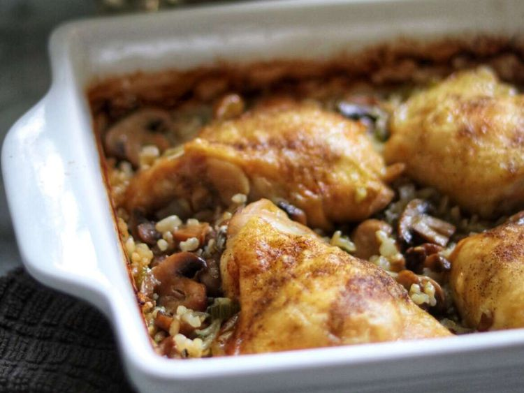

Baked Chicken Thighs

Baked Chicken Thighs will Mushroom Brown Rice
This dish is perfect for a quick dinner with minimal dishes. Only one pan is required for
this hearty chicken thigh and mushroom rice recipe!
Ingridients
- 4 ounce can of mushrooms
- 1 celery rib, sliced
- 1/4 cup chopped onion
- 1/3 cup brown rice
- 2 teaspoons minced garlic
- 1/4 teaspoon minced garlic
- 4 chicken thighs with skin and bones
- 1 tablesspoon olive oil
- salt and pepper to taste
Directions
- Preheat oven to 375 degrees
- Combine mushrooms, celery, onion, rice, and garlic in an ungreased 10-inch
baking dish. Sprinkle thyme, poultry seasoning, salt, and pepper on top.
- Add enough water to reserved mushroom liquid to measure 3/4 cup and pour over
rice mixture in the baking dish. Place chicken on top, skin-side up. Brush with
olive oil and season with salt and pepper to taste. Cover baking dish tightly
with aluminum foil.
- Bake in the preheated oven for 1 hour. Remove aluminum foil and bake until skin
is browned to your preference, 30 to 45 minutes more.